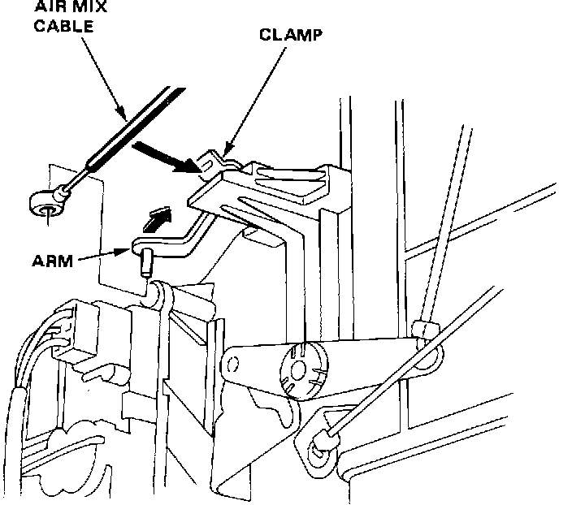
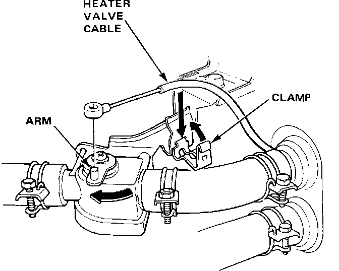

Air Door Cable: Adjustments
AIR MIX CABLEAir Mix Cable Adjustment:

1. Slide temperature control lever to HOT.
2. Open air mix door in front of heater core and connect cable end to arm. Slide cable housing back from end enough to take up any cable slack, but not enough to move dashboard lever. Snap cable housing into clamp.
3. After adjustment, also check heater valve cable adjustment.
HEATER VALVE CABLE
Heater Valve Cable Adjustment:

1. Slide temperature control lever to COLD.
2. Close heater valve fully. Connect cable end to valve arm and secure cable housing with clamp.